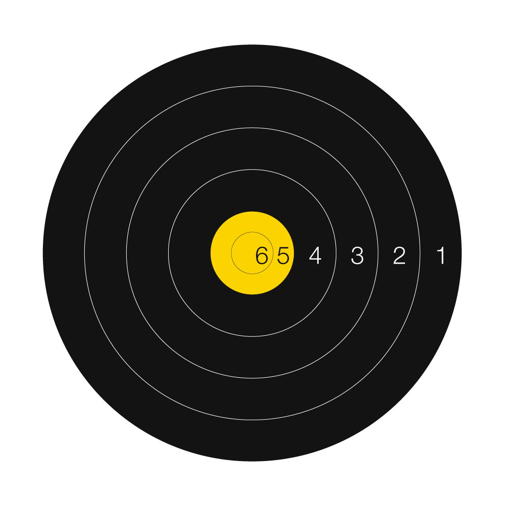
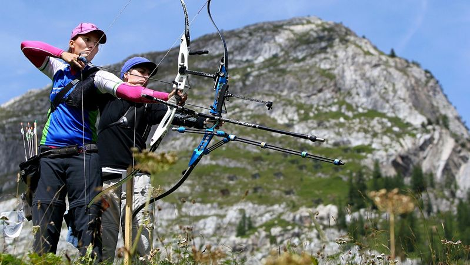

Field Archery
Field archery is the format of modern archery that takes place on a multi-target course (often compared to a golf course) set out over all kinds of terrain including fields, woods and forests.
International field archery includes three bowstyles: recurve, compound and barebow. Field archery is included on the World Games programme for recurve and barebow athletes (along with compound target archery).
Field archery is not shot over flat land, but includes up and down and cross-slopes, unmarked distance targets and challenges of light, dark and shadow. These additional aspects require skills known as “fieldcraft”.

Athletes usually shoot at black and yellow coloured target faces set at distances of up to 60 metres. The targets have six concentric rings, four black and two gold. The inner gold ring scores six points, outer gold ring five points and black rings four to one point.
World Archery international field archery events include the World Archery Field Championships, incorporating youth divisions.
COMPETITION FORMATS
Field archery has individual and team competitions at international events. World Archery also recognises a number of other competition field archery rounds not used at international events.
INDIVIDUAL COMPETITION FORMAT
At World Archery Field Championships, athletes shoot 48 targets over two days for qualification. One day consists of 24 target set at marked distances and one day consists of 24 targets set at unmarked or unknown distances.
Compound and recurve athlete shoot three arrows per target from red pegs (furthest away) while barebow athlete shoot three arrows per target from blue pegs (closer).
Athletes are ranked on the total of their 48-target qualification round. The top scoring 16 athletes in each division advance to the first elimination round, where they shoot three arrows each at 12 marked targets.
Athletes are then ranked on the total of their 12-target first elimination round. The top scoring eight athletes in each division advance to the second elimination round, where they shoot three arrows each at eight market targets.
Athletes are then ranked on the total of their eight-target second elimination. The top scoring four athletes in each division advance to the semifinals. The losers of the two semifinals compete in a bronze medal match while the winners of the two semifinals compete in the gold medal match to decide who wins the tournament.
Tied matches are decided with a shoot-off. Each athlete shoots one arrow and the arrow that lands closest to the middle wins the match. If no winner can be decided, the process is repeated until a winner is found.
TEAM COMPETITION FORMAT

As well as the individual competition, World Archery Field Championships also include team competition.
Teams comprise three athletes of the same gender, one of each bowstyle: compound, recurve and barebow. It is usually the highest scoring athlete of each bowstyle in qualification, however team managers may choose to substitute athletes.
Teams are seeded for their elimination matches using the total of the individual ranking round scores of their athletes and the competition begins at quarterfinal matchplay.
The top eight seeded teams in each division shoot head-to-head quarterfinal matches of eight marked targets, three arrows per target and one arrow per archer per target. Matches are decided on cumulative score.
The winning teams of each quarterfinal advance to the semifinals. The losers of the two semifinals compete in a bronze medal match while the winners of the two semifinals compete in the gold medal match to decide who win the tournament.
Semifinal and medal matches consist of four marked targets, three arrows per target and one arrow per archer per target. Matches are decided on cumulative score.
Tied matches are decided in a shoot-off. Each athlete in the team shoots one arrow. The team with the arrow that lands closest to the centre wins the match.
If no winner can be decided with each team’s arrow that is closest to the centre, then the second closest arrows are decided, then the third. If no winner can be decided, the process is repeated until a winner is found.
OTHER COMPETITION FORMATS
Other forms of field archery competition are explained in the World Archery rulebook.
Often, national events consist of the two-day qualification phase of international competition. National archery federations around the world use variations of the World Archery rules and traditional rules in their own countries, making archery one of the most diverse sports for competition formats in the world.
#Article from World Archery
Read More
> Target Archery> 3D Archery
> Traditional Archery
> Clout Archery
> Flight Archery